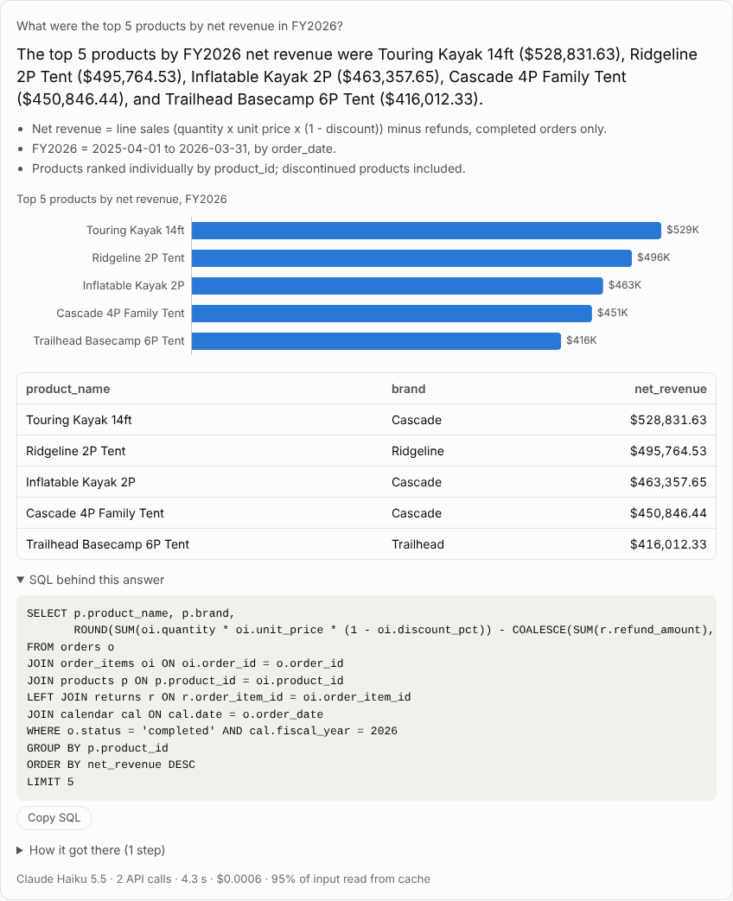

Open source · benchmarked · November 2026
Ask your data: a Claude agent that shows its SQL
Plain-English questions in, read-only SQL out. It applies governed metric definitions, asks when a name is ambiguous, and cites the query behind every number. I graded it on 50 questions by re-running its SQL, three runs each.
| Model | Accuracy | $ per 1,000 questions$ / 1,000 q |
|---|---|---|
| Claude Haiku 5.5 | 96.7% | $0.67 |
| Claude Sonnet 5.5 | 100% | $8.34 |
| Claude Opus 5.5 | 100% | $19.70 |
- Claude API
- Prompt caching
- MCP server
- Evals
- Python